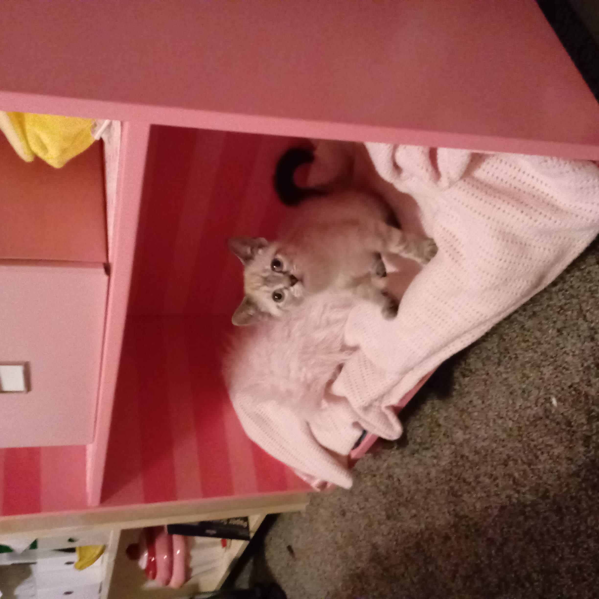
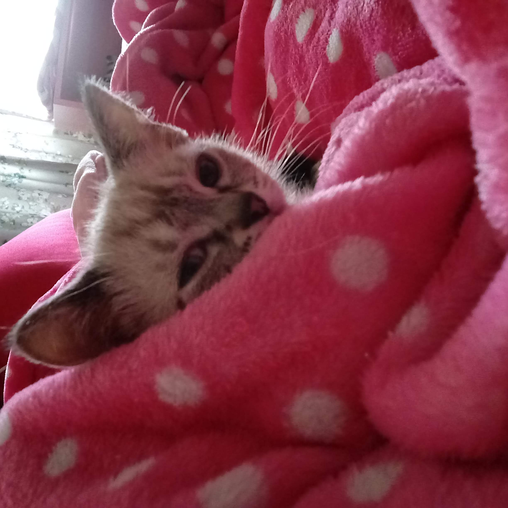
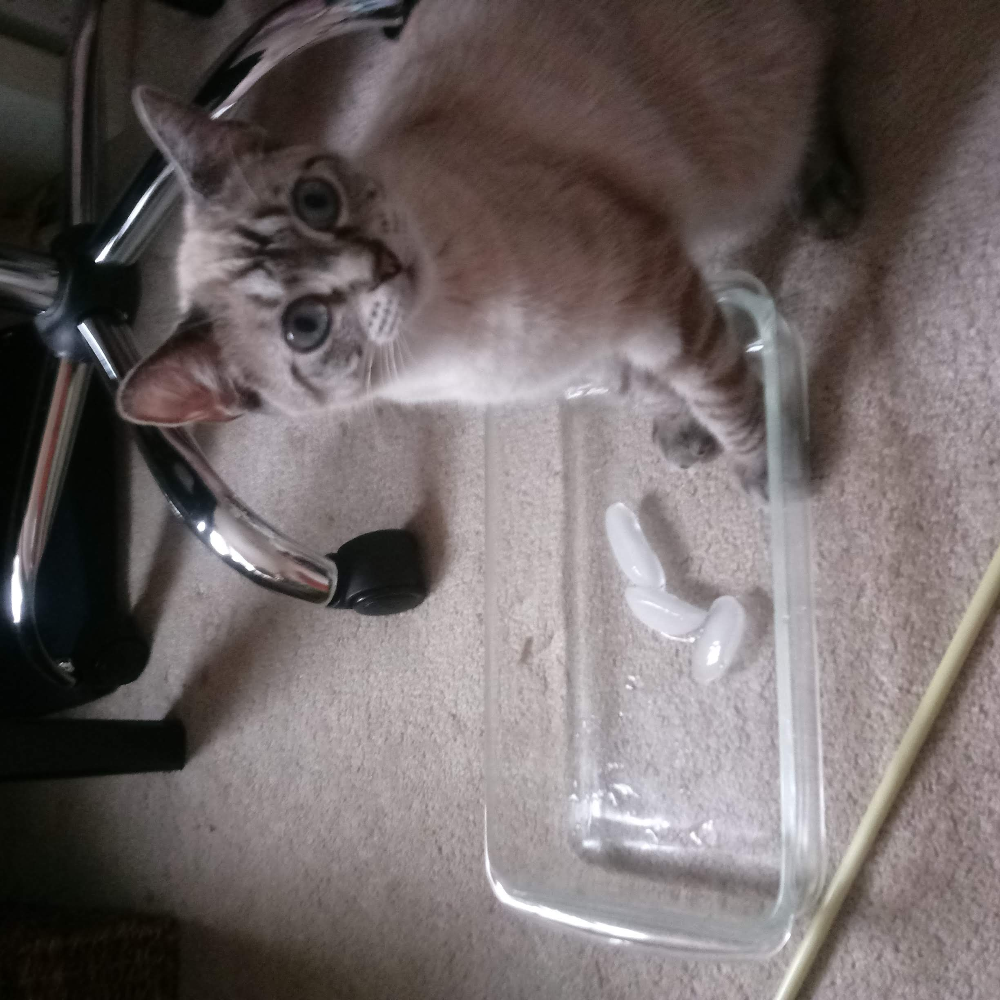
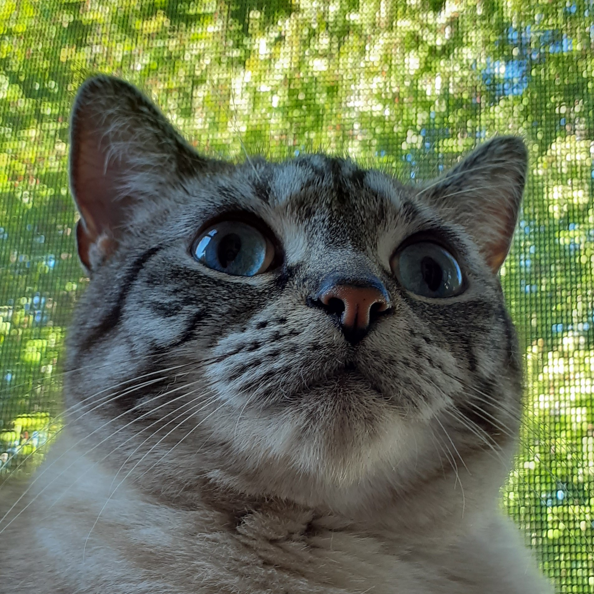
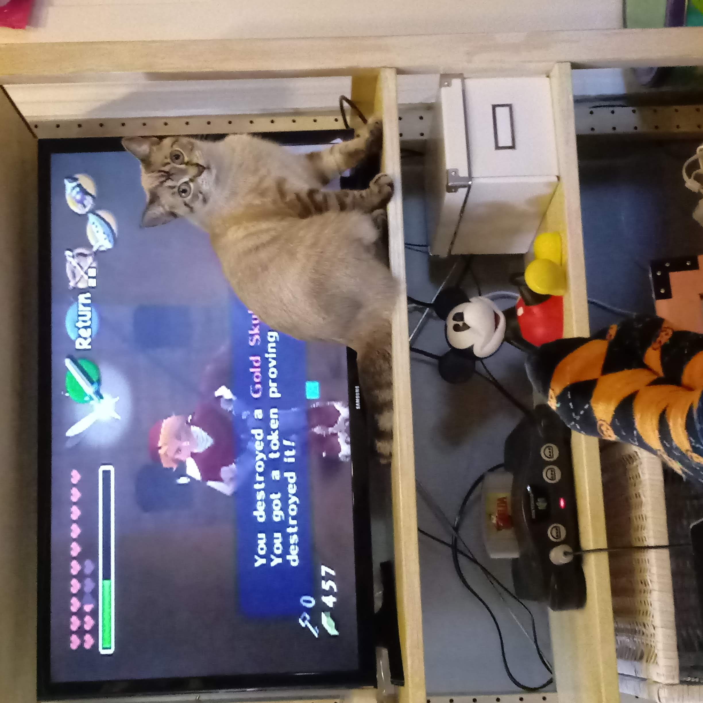
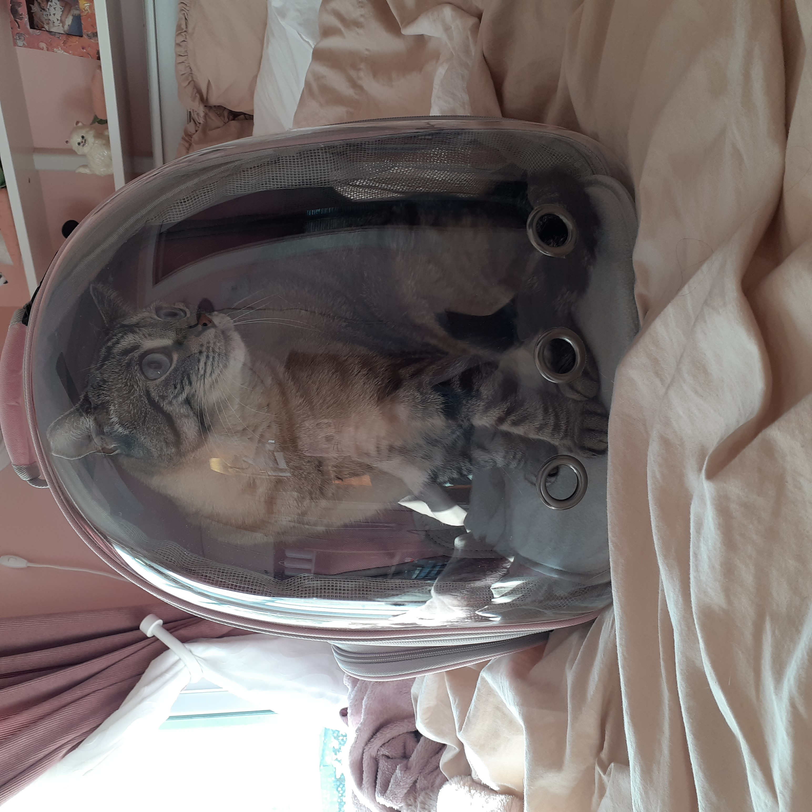
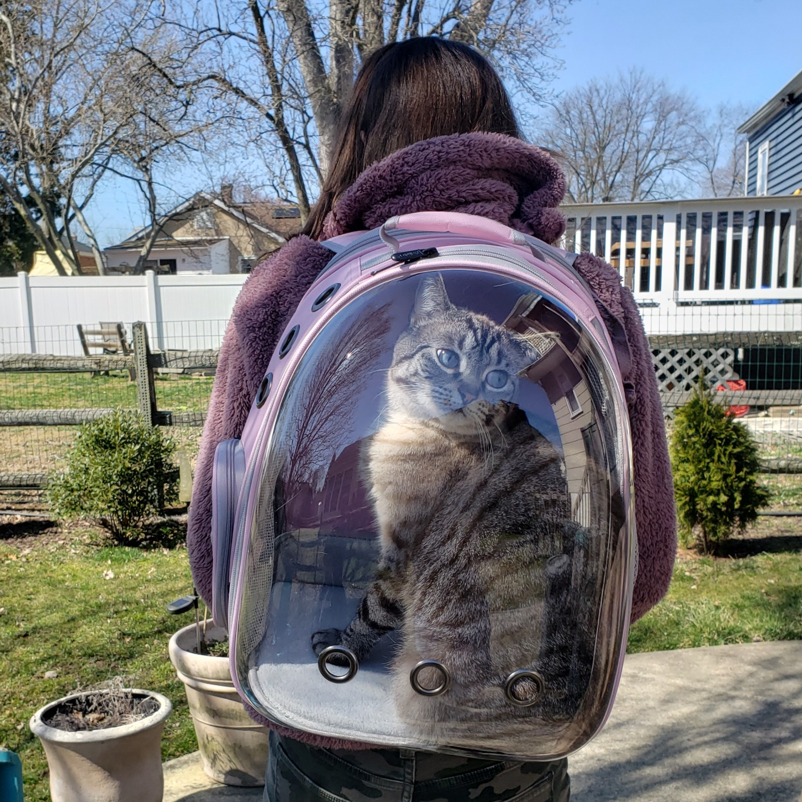
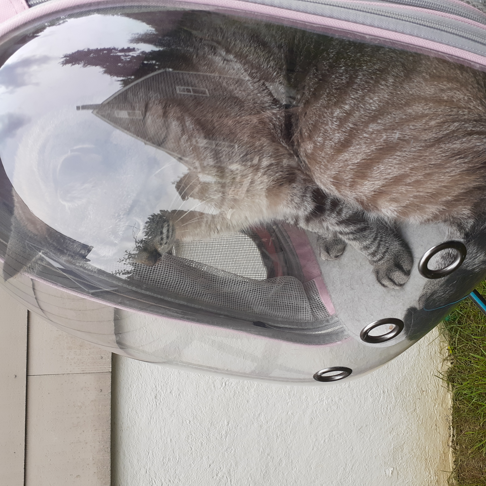

Adoption Story
 
Banana (formerly known as Sonata) was born Feb 15, 2019. I had been searching shelters for a kitten for a few months but never found one that grabbed my attention until I saw banana at the Paws and Prayers shelter via petfinder. She was this white and grey little puffball with GIANT eyes that I instantly fell in love with. I eagerly waited for her to be old enough to be adopted out and finally got to take her home May 2019. Little did I realize that this adorable little kitten was also a little demon spawn. I had alot of restless nights, chewed up eletronic cords and just the pluckest little kitten around. I am so extremely glad I stuck through those terrible kitten months because today Banana is the light of my life.
Fun Facts
  
- Banana got really into ice for a while. She used to come running when she heard a freezer open or an ice machine. She liked batting ice around like a hockey puck.
- When it was just me and Banana by ourselves, she would sometimes get in front of the TV, meow at me and whip her tail agianst the tv to try and get my attention.
- Banana's mom was a brown Tabby cat, and the dad might have been a siamese? She was more white as a kitten and with age her coloring has turned more grey and brown.
- She is a cat of many names, Banana-Rama Ding-Dong, Baby Banoodies, and Banoodle Doodle Bug.
- Banana is unbribeable with treats. She doesn't care about food, has no interest in delicious people food and only eats when shes hungry.
Adventure Banana
Spring 2021 Banana entered sport mode with the addtion of a pink backpack. Anytime she was on the screened in back porch and someone was in the back yard, she would start loudly meowing because who knows. The only sane solution was of course to buy baby banana a backpack that she could come join the fun in. Little did I realize that she would LOVE the backpack and want to go out all the time in it. She'll usually run into it, and start swiping her paws on the front to get anyones attention to let us know she would like to be carried out. Adventure Banana has only been around the outside of the house so only our neighbors have seen that we've lost our minds and are the servents to a cat.
  